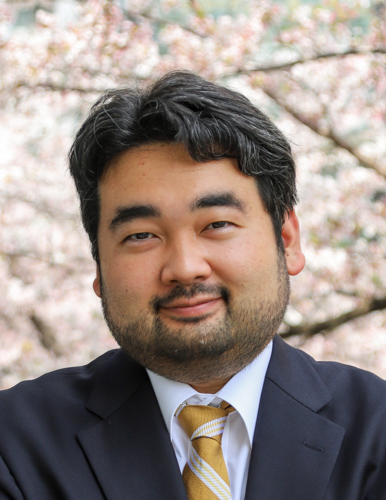

Go to my personal website (English).
准教授 (素粒子宇宙起源研究所)
Associate Professor (Kobayashi-Maskawa Institute for the Origin of Particles and the Universe; KMI)
E-mail: hironao.miyatake@% [@以下は下記参照 | See below for domain]
Room: ES総合館6階 615号室 | ES-building Floor 6, Room 615
2009/04 - 2012/03 日本学術振興会特別研究員 (DC1)
2012/03 東京大学大学院理学系研究科物理学専攻修了 博士(理学)
2012/04 - 2012/08 東京大学大学院理学系研究科物理学専攻 特任研究員
2012/09 - 2014/03 プリンストン大学天文物理学科 日本学術振興会海外特別研究員
2014/03 - 2015/08 東京大学カブリ数物連携宇宙研究機構 / プリンストン大学天文物理学科 日本学術振興会特別研究員(PD)
2015/09 - 2017/08 NASA ジェット推進研究所 / カリフォルニア工科大学 Caltech Postdoctoral Scholar
2017/09 - 2021/03 名古屋大学 特任助教 (高等研究員所属・理学研究科兼務 YLC特任助教)
2021/04 - 現在 名古屋大学 素粒子宇宙起源研究所 准教授
2016/09 - 現在 東京大学カブリ数物連携宇宙研究機構 客員准科学研究員
2017/19 - 現在 NASA ジェット推進研究所 Visiting Scholar
----------------------
2009/04 - 2012/03 JSPS Research Fellow (DC1)
2012/03 Ph.D. Department of Physics, Graduate School of Science, University of Tokyo
2012/04 - 2012/08 Project Researcher, Department of Physics, Graduate School of Science, University of Tokyo
2012/09 - 2014/03 JSPS Postdoctoral Fellow for Research Abroad, Department of Astrophysical Sciences, Princeton University
2014/03 - 2015/08 JSPS Research Fellow (PD), Kavli IPMU, University of Tokyo / Department of Astrophysical Sciences, Princeton University
2015/09 - 2017/08 Caltech Postdoctoral Scholar, Jet Propulsion Laboratory, California Institute of Technology
2017/09 - 2021/03 Designated Assistant Professor, Institute for Advanced Research, Nagoya University
2021/04 - present Associate Professor, Kobayashi-Maskawa Institute for the Origin of Particles and the Universe (KMI), Nagoya University
2016/09 - present Visiting Associate Scientist, Kavli IPMU, University of Tokyo
2017/19 - present Visiting Scholar, Jet Propulsion Laboratory, California Institute of Technology
観測的宇宙論, 重力レンズ, 銀河, 銀河団, サーベイ天文学
observational cosmology, gravitational lensing, galaxies, galaxy clusters, survey astronomy
1990年代後半に発見された宇宙の加速膨張は現代物理学における最大の謎の一つです。加速膨張は宇宙のエネルギー密度の約68%を占める暗黒エネルギーによって引き起こされていると考えられていますが、その正体は未だに明らかにされていません。暗黒エネルギーは素粒子論的な第５の力である可能性がある一方で、宇宙の加速膨張はアインシュタインの一般相対性理論の破綻を意味しているのかもしれません。この謎の解明に少しでも近づくため、私は弱重力レンズ効果と呼ばれる現象を用いて、宇宙の物質の３次元地図を作成することによって、宇宙の加速膨張を精密に測定する研究を行っています。また、宇宙の大規模構造と銀河・銀河団の進化の関係を調べる研究も行っています。これらの研究には、すばる望遠鏡広視野主焦点カメラHyper Suprime-Cam (HSC)を用いた大規模銀河サーベイのデータを主に用いており、私はカメラの開発から弱重力レンズ効果の解析まで幅広く関わってきました。現在はHSCのデータ解析と並行して、米国が推進するVera C Rubin天文台によるLegacy Survey of Space and Time (LSST), NASAのNancy Grace Roman宇宙望遠鏡, 欧州が推進するESAのEuclid宇宙望遠鏡による2020年代の超大規模銀河サーベイに向けた研究を行っています。
国際的な大規模コラボレーションで活躍する意欲のある学生の皆さんをお待ちしています。より詳しい研究内容については個人ウェブサイト(英語)をご覧ください。
----------------------
My research interest lies in observational cosmology through weak gravitational lensing measurements with big astronomical data sets from galaxy surveys. Weak lensing is one of the most powerful cosmology probes because of its sensitivity to dark matter spatial distributions. Three-dimensional dark matter mapping through weak lensing enables us to measure structure growth of the Universe and explore fundamental physics such as dark energy and modified gravity. I am also interested in the interplay between large-scale structure of the Universe and evolution of galaxies and galaxies clusters. I have been extensively working on the Subaru Hyper Suprime-Cam (HSC) survey where I have been playing a leading role in weak lensing analyses. I am also conducting preparatory studies for upcoming galaxy imaging surveys such as Vera C. Rubin Observatory's Legacy Survey of Space and Time (LSST), NASA's Nancy Grace Roman Space Telescope, ESA's Euclid. See my personal website for more details.